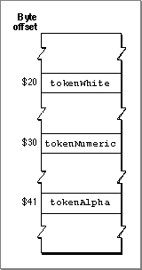

Legacy Document
Important: The information in this document is obsolete and should not be used for new development.
Important: The information in this document is obsolete and should not be used for new development.


The Token Table
The'itl4'resource includes the token table, an array of typemapCharTable. The token table, also called the character-mapping table, maps each possible byte value in a 1-byte character set into a token type. Its format is shown in Figure B-12.Figure B-12 Format of the token table
 The table consists of 256 bytes. The byte offset of each location in the table represents a character code: location 0 represents a character code of 0, location 255 represents a character code of 255. Each location in the table contains a token code that represents the type of token corresponding to that character code. Constants for all defined token codes are listed in the chapter "Script Manager" in this book.
The token table is used to define tokens in 2-byte script systems also. Any location in the table that has a value of -1 represents the first byte of a 2-byte character. When it encounters such a byte, the
IntlTokenizefunction calls the extension-fetching routine, described next, which analyzes that byte and the subsequent byte in the source text to determine what type of token is represented.